También la Bolivia
Avec Antoine nous auront passé une petite dizaine de jours en Bolivie, le temps d'avoir un véritable coup de cœur pour le pays ! De la beauté du lac Titicaca au décor de rêve du Salar d'Uyuni en passant par les mines d'argent de Potosí, le tout agrémenté de belles rencontres... on a vraiment adoré notre passage dans le pays !!
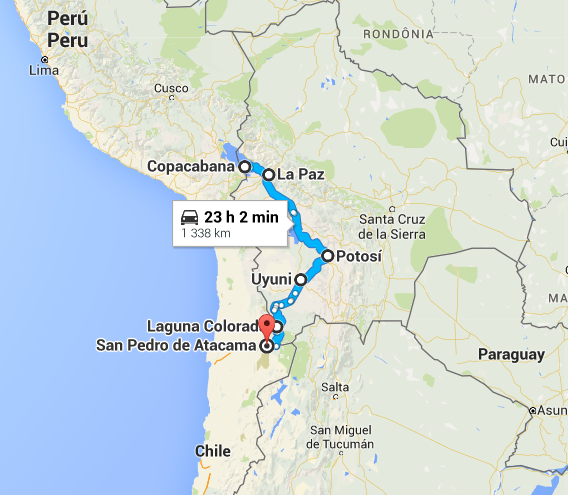
Notre itinéraire bolivien
On commence notre tour à Copacabana, une ville à la frontière péruvienne à quelques 3800m d'altitude. La ville est beaucoup plus petite que les grandes métropoles andines que nous avions traversées jusque là (6,000 habitants) ce qui la rend tout à fait charmante ! Surtout elle est posée sur les rives du lac Titicaca et on découvre émerveillés ce lac mythique. Si le nom du lac nous faisait rire quand on était petit, aujourd'hui il nous enchante par le bleu profond de ses eaux qui n'ont rien à envier à celles que nous avions vu en Alaska et au Canada. Du haut du Mont Calvario, au coucher du soleil on dispose d'une superbe vue à la fois sur la ville et sur le lac!
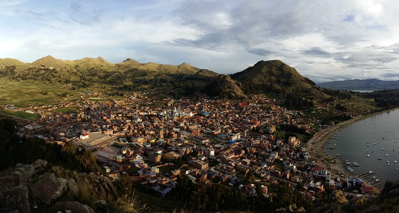
Vue sur Copacabana...
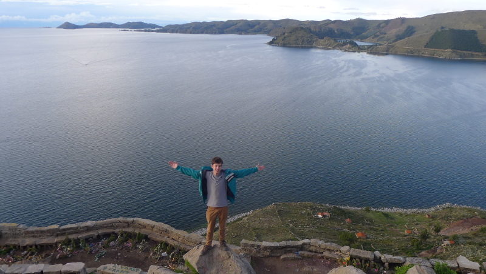
...et vue sur le lac !
Le lendemain on part en excursion sur l'Isla del Sol, une île au milieu du lac que nous traversons à pied du Nord au Sud. La traversée prend environ trois heures et les paysages du haut de la crête de l'île sont à couper le souffle. L'île est très préservée, encore marquée par l'agriculture locale et surtout domine le lac Titicaca. A près de 4000m d'altitude, le soleil tape fort même s'il ne fait pas trop chaud et la marche est fatigante. On retourne en fin de journée à Copacabana et on prend directement un bus jusqu'à La Paz.
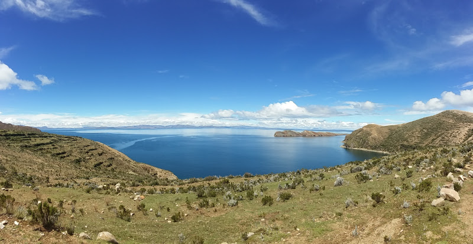
Une île bien préservée au beau milieu du lac Titicaca
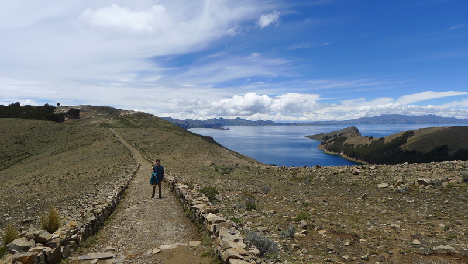
Des paysages à couper le souffle
On reste deux jours à La Paz, capitale de la Bolivie et capitale la plus haute du monde qui s'étend entre 3200 et 4000m d'altitude! On profite de ses marchés d'artisanat pour faire le plein de souvenirs et on expérimente un nouveau téléphérique après ceux de Quito et de Medellín pour bénéficier d'une belle vue sur la ville. On continue ensuite notre route vers le Sud direction Potosí, la ville minière de Bolivie.
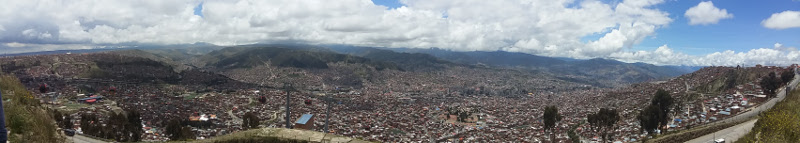
Un nouveau téléphérique au compteur pour Aquamerica à La Paz
Arrivés à Potosí, on perçoit tout de suite un changement d'ambiance. La Bolivie est en ce moment en pleine agitation politique car son président superstar Evo Morales, issu de la communauté aymara et en poste depuis dix ans, a proposé un référendum pour pouvoir briguer un nouveau mandat. Si à La Paz les affiches "Sí Evo" recouvrait la ville, ici on aperçoit beaucoup plus de grands "NO" sur le bord de la route...
On décide de partir pour une visite des mines qui font la réputation de la ville. La visite est faite par Jhonny, un ancien mineur, et l'argent des visites sert directement aux familles des mineurs. Jhonny nous confirme notre impression, Evo Morales n'est pas du tout populaire ici. Les revenus des mineurs ont chuté ces dernières années à cause de la baisse du prix des matières premières et l'état bolivien ne semble pas y faire grand chose. La visite des mines est véritablement impressionnante. Sans être claustrophobe, je ne me sens pas très rassuré en m'enfonçant des centaines de mètres sous terre, en passant par des conduits étroits, parfois à plat ventre jusqu'à arriver aux zones de travail. Et c'est là que les choses se corsent. On y croise des mineurs en plein travail et qui ne sont pas là juste pour amuser les touristes. L'air est saturé de poussière, le travail est très physique et la récompense est maigre. Jhonny nous explique que l'espérance de vie d'un mineur n'est que de 55 ans, et ceux que l'on croisent nous expliquent qu'ils travaillent à la mine depuis l'âge de 14 ans!! De quoi nous faire regretter nos stages Excel ou Powerpoint en entreprise... On ressort des mines après deux heures de pérégrinations dans les boyaux tortueux, on en a déjà marre et on se demande comment font les hommes pour tenir ce travail au quotidien.
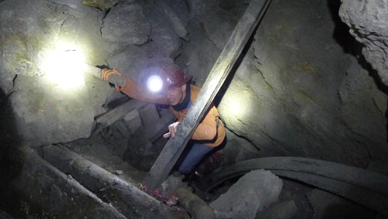
Passage par des boyaux très étroits
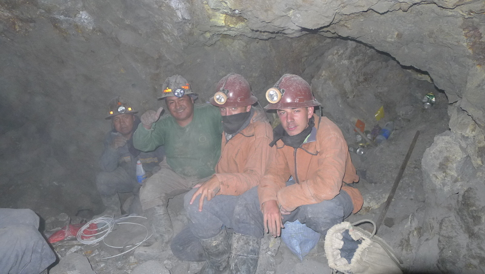
Rencontre avec des mineurs en pleine activité dans la mine
L'ambiance crispante de la mine contraste avec celle du centre ville de Potosí, joyeuse et remplie de lycéens qui fêtent encore la fin du Carnaval. On quitte Potosí, direction Uyuni, une ville en plein désert, étape obligatoire avant de passer par le mythique Salar.
Uyuni n'a pas grand intérêt si ce n'est celui d'y trouver un tour pour traverser le Salar et ses environs. La ville comporte de nombreuses agences qui proposent toutes exactement le même circuit quasiment à la minute près : un tour de trois jours en 4x4 par groupe de six jusqu'à San Pedro de Atacama au Chili. Un peu au hasard on finit par en choisir une et le lendemain on découvre le groupe avec qui on va passer les 3 prochains jours. Le groupe est très latino-américain puisque nous nous retrouvons avec deux chiliens Sebastian et Nicole, un équatorien Sebastian aussi, une mexicaine Lorena, sans oublier notre chauffeur-guide bolivien Isaac. Ils sont tous très sympas, un accueil chaleureux et de la bonne humeur typiquement latine, on est ravis ! En plus Antoine va pouvoir améliorer un peu son espagnol. Il se fait presque comprendre partout maintenant :)
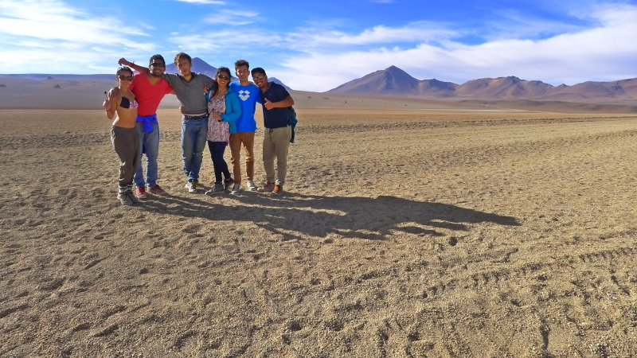
On part en excursion avec Lorena (Mexique), Sebastian (Equateur), Nicole et Sebastian (Chili)
La première étape du tour est le passage par un cimetière de trains en plein désert, à la sortie de la ville d'Uyuni. Plutôt original comme décor, et résolument western! De quoi nous rappeler de bons souvenirs du Montana. C'est l'occasion d'une première séance photo de la journée :)
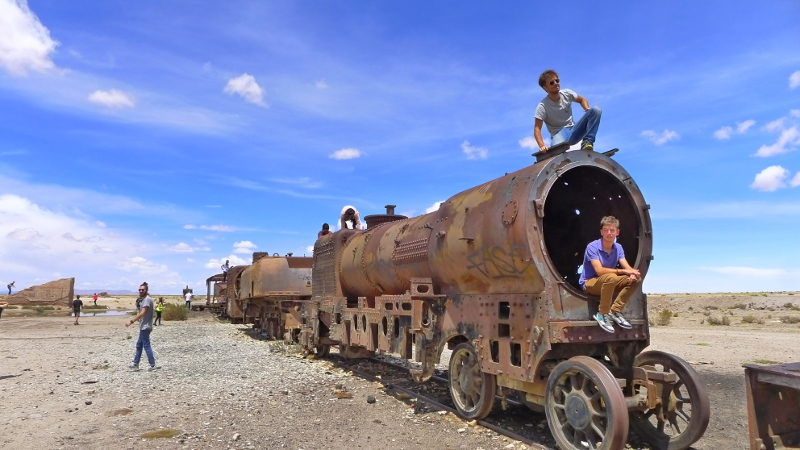
Pose pour un prochain album de rock
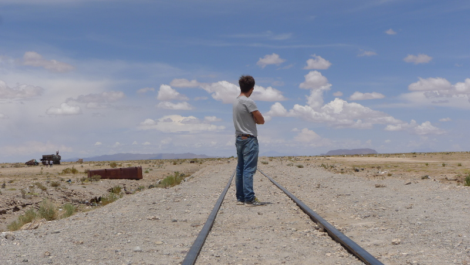
Calendrier 2016-2017
On file ensuite directement jusqu'au célèbre Salar d'Uyuni, un immense désert de sel. A cette époque de l'année il est recouvert d'une fine pellicule d'eau et cela donne l'impression de passer à travers le ciel. Magique, presque irréel ! L'immense étendue du Salar permet également de jouer avec la perspective pour une deuxième séance photo de la journée. Personnellement j'avais souvent entendu parler du Salar et vu diverses photos défiler sur Facebook mais j'ai tout de même été bluffé par la beauté du lieu, je ne m'attendais pas à quelque chose d'aussi magistral !!
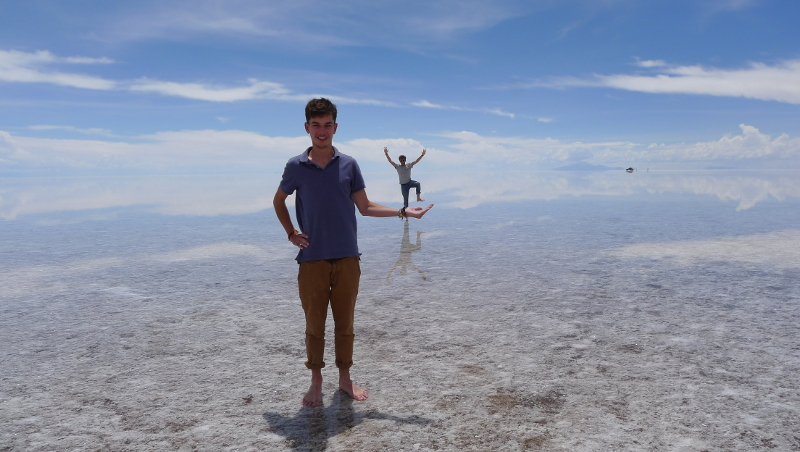
Un Pochet de poche
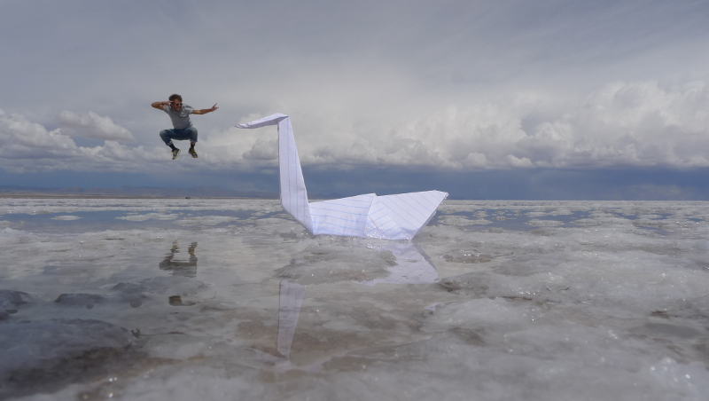
L'attaque du cygne
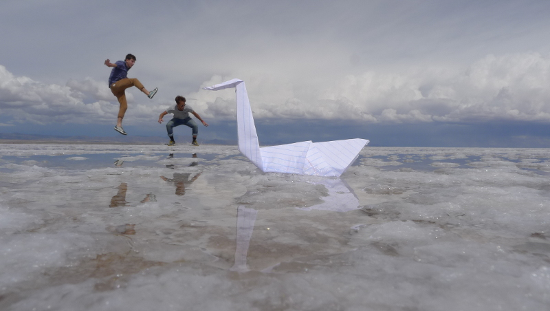
L'attaque du cygne n°2*
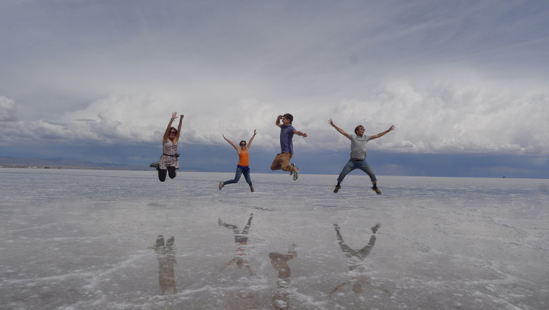
Tentative de saut en simultané
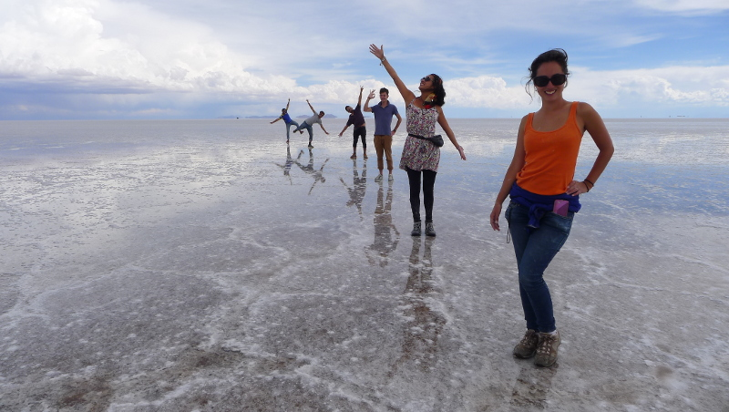
Du plus grand au plus petit... ou l'inverse on ne sait plus
La deuxième journée du tour nous réserve d'autres surprises. On commence par une vallée de roches volcaniques sous un grand soleil, avec en arrière plan les volcans en questions qui sont les grands acteurs des magnifiques paysages de la région. On croise des troupeaux de lamas et des champs de quinoa. Notre guide nous explique que depuis quelques années le prix du quinoa a monté en flèche, et que les cultures qui étaient souvent laissées à l'abandon avaient été reprises par les paysans locaux. Quand les hipsters sauvent les petits paysans boliviens. On passe par des lagunes magnifiques dont une qui abrite de nombreux... flamants roses !! Ils sont nombreux et on peut les approcher à quelques mètres à peine! Première fois de ma vie que j'en vois...
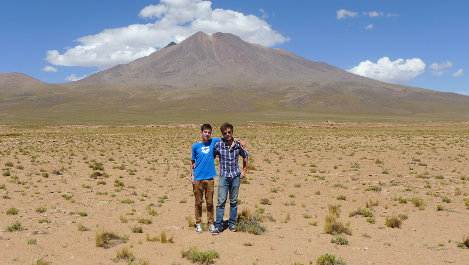
Devant l'un des volcans qui sculpte le paysage
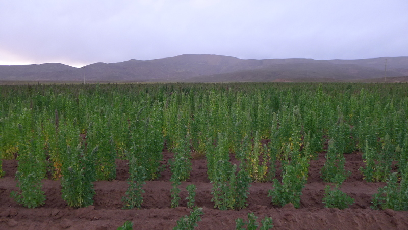
Voici à quoi ressemble des plants de quinoa
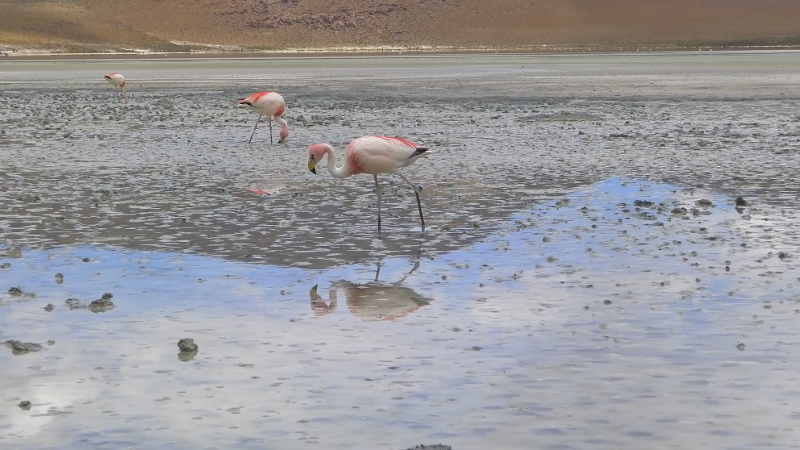
Un des flamants roses qui habite le lac
On continue ensuite à travers le désert jusqu'à el arbol de piedra, une roche sculptée par l'érosion en forme d'arbre, puis le clou du spectacle de la journée, la Laguna Colorada, un lac qui devient rouge à partir de midi à cause des micro-organismes qui s'y trouvent. En plus de cela le lac abrite aussi de nombreux flamants roses !
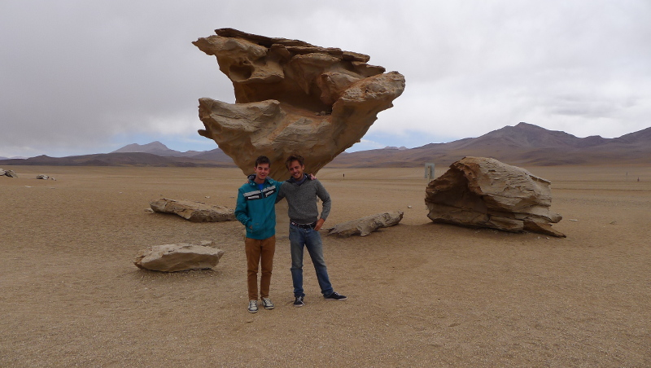
El Arbol de Piedra, l'un des symboles du désert
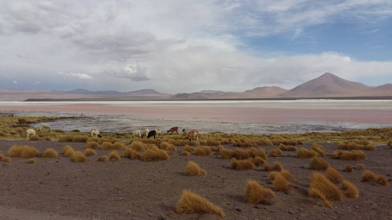
La Laguna Colorada devient rouge à cause des micro-organismes qui s'y trouvent
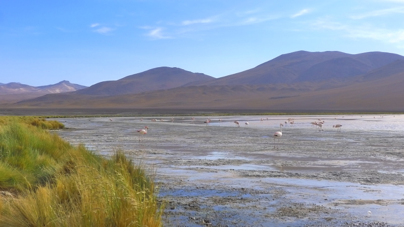
La Laguna Colorada, habitée aussi par de nombreux flamants roses
Le troisième et dernier jour de l'excursion on se lève aux aurores pour aller voir les geysers del sol de mañana, particulièrement actifs au lever du soleil. Cette fois ci c'est de Yellowstone que les odeurs de souffre nous rappellent de bons souvenirs ! Après un passage par des sources d'eau chaude en pleine nature, on arrive à la frontière chilienne. On dit au revoir à notre guide bolivien Isaac, mais le courant étant bien passé on continue avec notre groupe qui va également à San Pedro de Atacama, de l'autre côté de la frontière. Sebastian est originaire de la région, il connaît bien la ville et nous sert de guide!
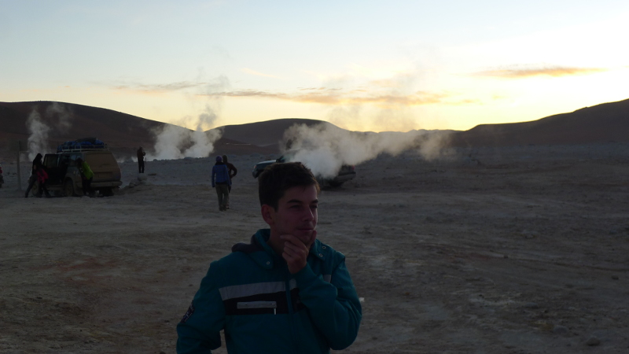
Ca fume devant les geysers del sol de mañana
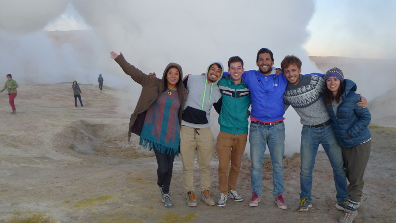
Photo de groupe devant les geysers
A San Pedro on prolonge donc l'aventure avec notre groupe 2 jours supplémentaires. Les deux Sebastian sont sympas mais ont le malheur... d'être supporters de Chelsea! Or c'est justement le jour du 1/8e de finale aller entre Paris et Chelsea. On regarde donc ensemble le match, heureusement Ibra, Cavani et Trapp zlatanent Chelsea 2 à 1 ce soir là. Ouf l'honneur est sauf. Le soir Nicole et Sebastian nous préparent des spécialités chiliennes accompagnés d'un vin chilien. Le lendemain on part tous en excusrsion à vélo à la Valle de la Luna nommée ainsi car blanchie par le sel qui s'y trouve, on se croirait parfois sur la lune. Les paysages sont encore une fois magnifiques. Après 3 jours passés dans le 4x4, le vélo nous permet de réenclencher la machine. Après une journée à pédaler à travers le désert on finit quand même bien fatigués.
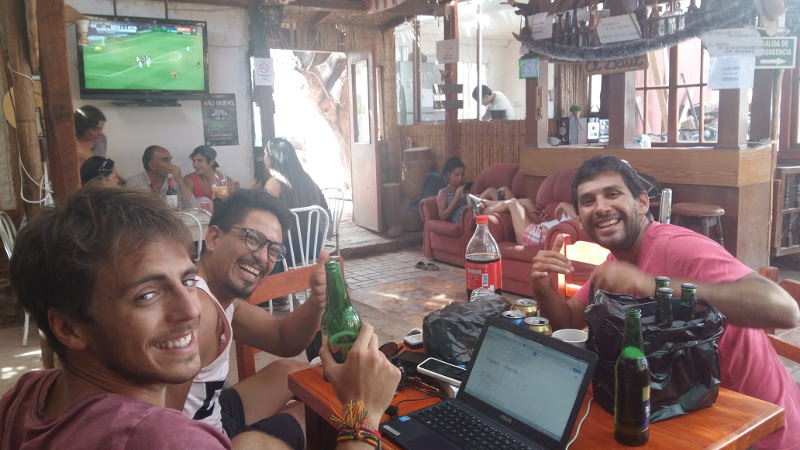
Victoire du PSG 2-1 contre Chelsea
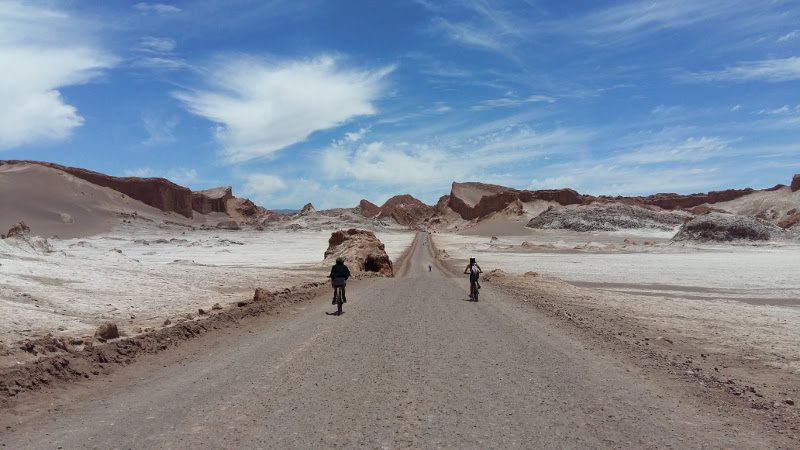
Excursion à la Valle de la Luna en vélo, dans un décor lunaire
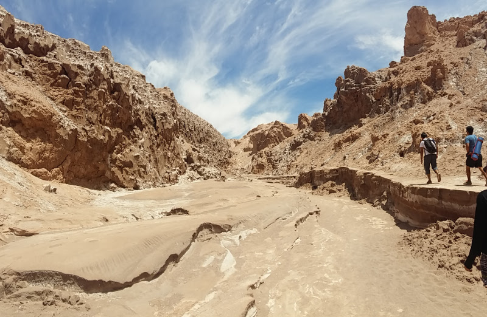
Le soleil tape fort dans le désert d'Atacama
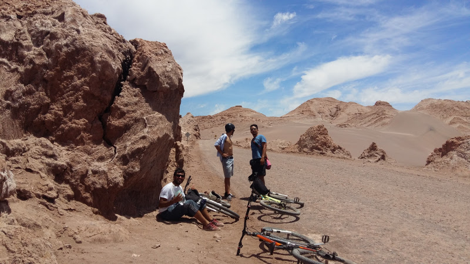
On finit la journée bien fatigués
Vient ensuite le moment de faire nos adieux à nos amis chiliens, mexicains et équatoriens. Nous prenons un avion jusqu'à Santiago, capitale du Chili où nous attendent de nouvelles aventures. Les 10 prochains jours nous retentons l'expérience woofing dans un vignoble au Nord de Santiago... on essayera de vous donner des nouvelles rapidement !
Et comme d'habitude on se quitte avec un jeu concours. Durant notre excursion nous avons eu l'occasion de demander à Isaac notre guide bolivien combien coûtait un lama. Simple curiosité. Alors à votre avis combien coûte en dollars un tel animal ?
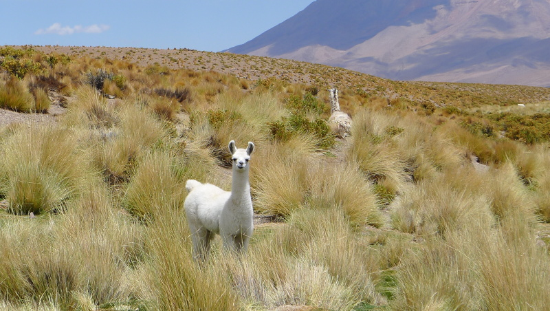
Combien coûte en dollars un jeune lama comme celui-ci ?
Envoyez vos réponses à contact@aquamerica.fr et comme d'habitude le gagnant aura droit à sa dédicace sur Facebook ;)
On vous embrasse et à très vite !
PS : en bonus quelques photos de notre petit Spinoza, bien gardé par Valentine à Paris. La vie a l'air dure pour lui aussi !
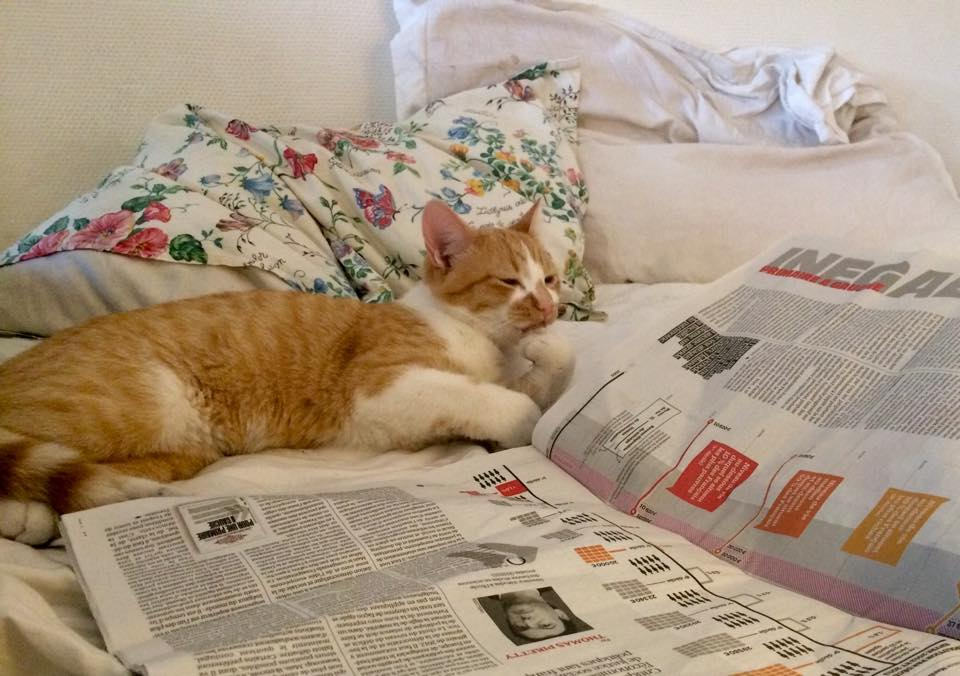
Spinoza se cultive en lisant le journal
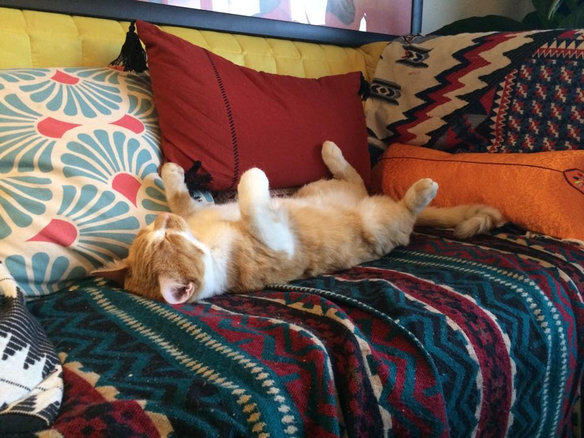
Je veux faire comme les humains et dormir sur le dos